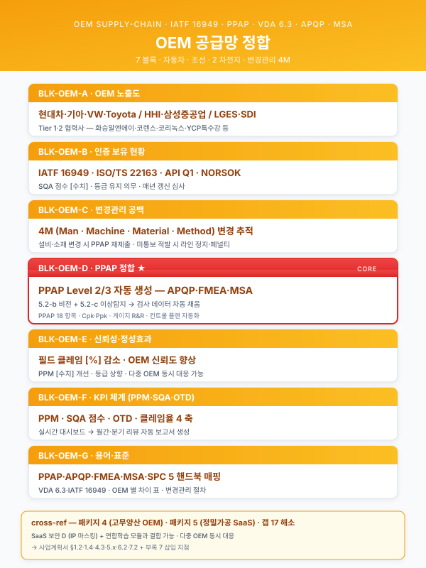
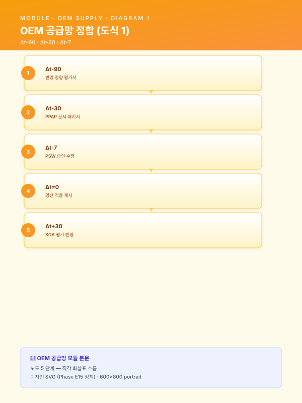

모듈 — 자동차 OEM 공급망 정합 (크로스커팅 재사용 블록)¤
📖 약 26 분 읽기

1. 모듈 목적¤
본 모듈은 자동차·전자·기계 OEM 의 1·2 차 협력사가 제조 AI 사업을 추진할 때 OEM 측이 요구하는 변경관리·품질보증·승인 프로세스 정합 을 사업계획서 여러 섹션에 일관 톤으로 주입하기 위한 크로스커팅 재사용 블록 세트 이다. 화승알엔에이·코리녹스·코렌스 등 워크스페이스의 핵심 고객군은 현대차·기아·GM·VW·Toyota·LG 등 글로벌 OEM 의 1·2 차 공급망에 속하며, 대중소상생 사업·OEM 협력 사업·디지털 경남·전사적 DX 등 다수의 지원사업이 OEM 측 변경관리·품질 인증 정합을 사실상의 자격 요건으로 요구하고 있다. 그럼에도 기존 모듈 (CBAM·중대재해·연합학습·SaaS 보안) 4 종은 환경·안전·연합·클라우드 축에 한정되어, OEM 정합 영역은 사업계획서 작성 시점에 §5.4 시스템 연동·§5.5 운영 거버넌스·§6.2 정성 효과·§6.3 KPI·§7.1 리스크 5 개 섹션을 매번 신규 작성하는 부담이 발생해 왔다. 패키지 4 (고무양산 파일럿) 의 자체평가에서도 동일 갭 (갭 17) 이 식별되었다.
본 모듈은 IATF 16949 (자동차 품질경영 표준) · PPAP (Production Part Approval Process) · SQA (Supplier Quality Assurance) · VDA 6.3 (독일 OEM 프로세스 감사) · FMEA (고장모드영향분석) 의 5 축을 핵심 쟁점으로 삼아, AI 도입을 4M (Man·Machine·Material·Method) 변경의 Method 축으로 분류하고 OEM 사전 통지·승인 프로세스에 정합하는 어휘를 표준화한다. 또한 OEM 별로 출시되는 AI 가이드라인 (확인 필요) 과 산업기술보호법·OEM 도면 IP 보호의 정합을 함께 다루어, 1 차 협력사 SQA 점수 영향을 차단하는 거버넌스 톤을 제공한다. 기존 모듈과 동일 7 절·7 블록 (A~G) 포맷으로, 사업계획서 작성자가 고객사 OEM 노출도와 차종·구역에 따라 취사선택하여 삽입할 수 있도록 설계되었다.
ℹ️ 페이지 정보 (워크스페이스 메타)
플레이스홀더 범례 — [고객사] 고객사명, [OEM] 자동차·전자·기계 OEM 명, [수치] 수치 전반, [%] 비율, [기간] 기간, [Tier] 1·2·3 차 협력 단계, [차종] 차종·플랫폼명, [부품] 대상 부품군, [법령-2026] 시행 시점에 따라 교체가 필요한 법령·고시·인증 가이드 태그.
본 모듈에 포함된 IATF 16949 개정·PPAP Level 별 요건·VDA 6.3 P 코드·OEM 별 AI 가이드라인은 모두 "(확인 필요)" 표기 또는 플레이스홀더로 처리하였으며, 실무 투입 전 [법령-2026] 기준의 최신 표준·OEM 매뉴얼을 확인하여 채워야 한다.
2. 삽입 지점 맵¤
| 삽입 위치 (상위 문서 섹션) | 본 모듈 블록 | 분량 추천 | 사용 성격 |
|---|---|---|---|
| Track 1 § 1.4 고객사 현황 | BLK-OEM-A OEM 협력사 노출도 | 1 문단 (220~300자) | 고객사별 교체 (OEM 매출 비중) |
| Track 1 § 2.2 대상 공정 또는 § 2.3 인증 보유 | BLK-OEM-B 공정·품질 인증 보유 현황 (IATF 16949·VDA 6.3) | 1 문단 + 표 (240~320자) | 고객사별 교체 (보유 인증 차이) |
| Track 1 § 3.x AS-IS | BLK-OEM-C OEM 변경관리·승인 프로세스의 현 공백 | 1~2 문단 (380~520자) | 공통 고정 (현장 공백 진단) |
| Track 1 § 5.4 시스템 연동 | BLK-OEM-D AI 도입의 OEM 변경관리 정합 (PPAP·SQA·문서) | 2 문단 (560~780자) | 본 모듈의 핵심 블록 |
| Track 1 § 6.2 정성 효과 | BLK-OEM-E OEM 신뢰성 강화·1 차 협력사 지위 | 1 문단 (220~280자) | 공통 고정 (CBAM-E 와 병기) |
| Track 1 § 6.3 KPI | BLK-OEM-F OEM 요구 KPI (PPM·납기·SQA 점수) | 1 문단 + 표 (240~300자) | 고객사별 교체 (PPM·납기 수준) |
| 부록 / 별첨 용어집 | BLK-OEM-G OEM 인증·표준 용어 인덱스 | 0.5 페이지 | 공통 고정 (부록 자산) |
총 7 개 블록 · 7 개 삽입 지점 으로, 기존 4 모듈 (CBAM·중대재해·연합학습·SaaS 보안) 과 동일 구조이다.
조합 패턴 예시 - 자동차 1 차 협력사 풀패키지 (패키지 4 등): A + B + C + D + E + F + G (7 개 블록 모두 투입) - 2 차 협력사 약식: A + D + E + F (노출도·정합·신뢰성·KPI 만 압축 투입) - R&D 연구개발계획서용: C + D + G (현 공백·핵심 정합·용어집만 투입, 사업화 효과는 생략) - SaaS 보안 모듈과 결합: 본 모듈 D + 모듈 SaaS 보안 D (도면 IP) → 영업비밀 도면 + OEM 정합 통합 톤 - 연합학습 모듈과 결합: 본 모듈 D + 모듈 연합학습 → OEM 가이드라인 정합 + 산단 공동 학습 통합
3. 본문 블록¤
BLK-OEM-A — OEM 협력사 노출도¤
- 블록 ID:
BLK-OEM-A - 용도: Track 1 § 1.4 고객사 현황 말미에 "이 고객사가 OEM 공급망에서 어느 위치에 있는가" 를 수치로 환기. 후속 블록 B (인증) · C (현 공백) 의 전제로 작동.
- 초안 문장 (고객사별 교체, 약 270자):
[고객사] 는 [OEM] 의
[Tier]차 협력사로서 연간 매출의[%]% 가 [OEM] 향 [부품] 납품에서 발생하며, 주력 차종은 [차종] · [차종] 등[수치]종이다. [OEM] 측 SQA 평가에서 직전 회기[등급]등급을 유지하고 있으며, 직납 BOM 점유율은 [부품] 기준[%]% 수준이다. 또한 [OEM] 외에도[수치]개 OEM 에 분산 납품하고 있어, OEM 별로 상이한 변경관리·품질보증 표준에 동시 대응해야 하는 구조이다. 본 사업이 도입하는 AI 시스템은 단일 OEM 표준이 아니라 IATF 16949·VDA 6.3·OEM 별 AI 가이드라인 (확인 필요) 의 공통 분모를 정합 기준으로 채택하여, 다중 OEM 공급 구조에서도 일관된 변경관리·승인 프로세스를 운영할 수 있도록 설계된다.
- 주요 키워드·수치:
[OEM],[Tier]차 협력, SQA[등급]등급, BOM 점유[%]%, 다중 OEM 공급, IATF 16949·VDA 6.3 공통 분모. - 대체 문구 옵션
- 단일 OEM 의존도 높은 고객사: "또한 [OEM] 외에도 …" 부분을 "현재 [OEM] 단일 의존도가
[%]% 에 달해, 본 사업은 OEM 정합성 강화와 동시에 신규 OEM 영업 확장의 자격 요건 확보 효과를 함께 추구한다" 로 교체. - 2 차 협력사: "직납 BOM 점유율" 부분을 "1 차 협력사 [고객사-1차] 를 경유한 간접 납품 비중
[%]%" 로 교체. - 전자·기계 OEM 동시 공급: "주력 차종" 부분을 "주력 적용 제품군은 자동차·전자·산업기계
[수치]개 부문" 으로 교체.
BLK-OEM-B — 공정·품질 인증 보유 현황¤
- 블록 ID:
BLK-OEM-B - 용도: Track 1 § 2.2 대상 공정 안쪽 또는 § 2.3 별도 인증 보유 섹션에서, 본 사업의 대상 공정이 보유한 품질·환경·프로세스 인증을 OEM 정합 관점으로 정리. AI 도입이 인증 갱신 일정과 어떻게 맞물리는지를 표로 명시.
- 초안 문장 (고객사별 교체, 약 280자 + 표):
[고객사] 는 자동차 산업 품질경영 표준인 IATF 16949 와 환경경영 ISO 14001 인증을 보유하고 있으며, [OEM] 의 요구에 따라 VDA 6.3 (프로세스 감사) · VDA 6.5 (제품 감사) 의 외부 감사를
[기간]주기로 수검 받고 있다. 본 사업의 AI 도입이 적용되는 [공정] 은 IATF 16949 7.1.5 (모니터링·측정 자원) · 8.5 (생산 및 서비스 제공) 조항에 직접 연계되며, AI 시스템의 검증·감사 추적 기능이 인증 갱신 시 OEM 감사관에게 추가 객관 증거로 제출 가능하도록 설계된다. 인증 갱신 주기는 IATF 16949 가[기간], VDA 6.3 가[기간], ISO 14001 이[기간]으로, 본 사업 일정은 직전 회기 갱신 시점과[기간]이상 시차를 두어 갱신 부담과 충돌하지 않도록 조정된다.
인증 발행 기관 적용 범위 갱신 주기 본 사업 정합 포인트 IATF 16949 IATF 인정 인증기관 자동차 부품 품질경영 (ISO 9001 + 자동차 부속서) [기간](감시 심사 연 1 회)7.1.5 모니터링 자원 / 8.5 생산 제공 VDA 6.3 독일 OEM (VW·BMW·Daimler 등) 프로세스 감사 (P-1 ~ P-7) [기간](OEM 요청 시)P-3·P-5·P-6·P-7 (확인 필요) VDA 6.5 독일 OEM 제품 감사 [기간]양산 부품 샘플 검증 ISO 14001 KAB 인정 인증기관 환경경영 [기간](3 년)CBAM 모듈 BLK-CBAM-B 연계 (선택) ISO 45001 KAB 인정 인증기관 안전보건경영 [기간]중대재해 모듈 BLK-SAF-B 연계
- 주요 키워드·수치: IATF 16949 7.1.5·8.5, VDA 6.3 P-3·P-5·P-6·P-7, VDA 6.5, ISO 14001, ISO 45001, 인증 갱신 주기
[기간], 외부 감사 시차. - 대체 문구 옵션
- IATF 16949 미보유 (2 차 협력사 일부): "IATF 16949 와 …" 부분을 "ISO 9001 을 기반으로 [OEM] 측 자체 협력사 품질 표준 (예: 현대차 5-Star, GM BIQS, Ford Q1) 에 대응 중이며, 본 사업을 통해 IATF 16949 신규 취득을 단계적으로 추진한다" 로 교체.
- VDA 미적용 (북미 OEM 위주): VDA 6.3·6.5 행을 삭제하고 "AIAG (북미) CQI-9·CQI-11·CQI-15 등 특수공정 평가" 행으로 교체.
- 전자·기계 OEM 추가: 표 하단에 "TL 9000 (통신 장비)·AS 9100 (항공 우주)" 행 추가 옵션.
BLK-OEM-C — OEM 변경관리·승인 프로세스의 현 공백 (AS-IS)¤
- 블록 ID:
BLK-OEM-C - 용도: Track 1 § 3.x AS-IS 진단에서, AI 도입이 OEM 측 4M 변경관리·PPAP 재제출·FMEA 갱신 의무를 발생시킨다는 점과, 현재 [고객사] 의 변경관리 문서가 분산·수기 관리되어 OEM 감사 시점의 자료 소집에 과도한 공수가 소요되는 구조적 공백을 1~2 문단으로 진단.
- 초안 문장 (공통 고정, 약 460자, 1~2 문단):
자동차 OEM 공급망에서 AI 도입은 단순한 IT 시스템 추가가 아니라, OEM 측 4M (Man·Machine·Material·Method) 변경관리 절차상 Method (작업 방법) 변경 으로 분류된다. 이는 AI 가 검사·예지보전·공정 파라미터 추천 등 양산 공정에 영향을 미치는 의사결정에 개입하는 순간, 협력사가 OEM 측에 사전 통지·PPAP (Production Part Approval Process) 재제출·FMEA (고장모드영향분석) 갱신·런 양산 검증 의무를 부담함을 의미한다. PPAP Level (확인 필요) 에 따라 부속 문서 종류가 달라지고, VDA 6.3 적용 OEM 의 경우 P-3 (개발) · P-7 (양산) 프로세스 감사가 추가로 트리거된다.
그러나 [고객사] 의 현 변경관리 운영은 공정 변경 신청서 (수기) · FMEA (Excel) · SPC (Statistical Process Control) 차트 (개별 PC) · 컨트롤 플랜 (PDF) · 8D (불량 대응 8 단계 보고서) (메일) 가 각기 다른 시스템과 매체에 분산되어 있어, OEM 감사 시점에 변경 이력의 일관된 추적과 자료 소집에 평균
[기간]일이 소요되며, 일부 항목은 담당자 부재 시 재구성이 불가능한 상태이다. 이 구조 위에 AI 시스템을 도입하면 변경관리·승인 부담이 가중되어 OEM 정합성 확보가 어려워지고, 1 차 협력사 SQA 점수 하락·신규 양산 수주 기회 상실의 리스크로 직결된다. 본 사업은 이 구조적 공백을 AI 도입과 동일 시점에 변경관리 디지털 백본으로 정합·해소함을 핵심 명제로 한다.
- 주요 키워드·수치: 4M 변경 (Man·Machine·Material·Method), Method 변경 분류, PPAP 재제출, FMEA 갱신, 런 양산 검증, VDA 6.3 P-3·P-7, 분산 수기 운영, 자료 소집
[기간]일, SQA 점수 하락 리스크. - 대체 문구 옵션
- 변경관리 디지털화 일부 진행 고객사: 두 번째 문단의 "각기 다른 시스템과 매체에 분산되어" 부분을 "PLM 일부 모듈에 통합되었으나 FMEA·8D 는 여전히 Excel·메일에 머물러" 로 교체.
- Method 변경에 한정되지 않는 사업: 첫 문단의 "Method (작업 방법) 변경으로 분류된다" 뒤에 "동시에 신규 검사 장비 도입이 수반될 경우 Machine 변경, 신규 데이터 수집 인력 배치 시 Man 변경이 함께 발생" 1 문장 추가.
- R&D 연구개발계획서용: 두 번째 문단을 생략하고 첫 문단만 사용, "본 연구는 AI 의 OEM 변경관리 정합 자체를 연구 과제로 다룬다" 로 톤 전환.
BLK-OEM-D — AI 도입의 OEM 변경관리 정합 (PPAP·SQA·문서)¤
- 블록 ID:
BLK-OEM-D - 용도: Track 1 § 5.4 시스템 연동에서, 본 사업의 AI 시스템이 OEM 변경관리·PPAP·SQA·VDA 6.3·OEM AI 가이드라인 (확인 필요) 에 어떻게 정합하는지를 2 문단·구체 절차로 명시. 본 모듈의 핵심 블록 이며, 패키지 4 §5.4 신규 작성 부담을 흡수한다.
- 초안 문장 (시나리오별 교체, 약 700자, 2 문단):
(1) 변경관리·PPAP 정합 — 본 사업의 AI 도입은 [OEM] 측 4M 변경관리상 Method 변경으로 분류되며, 다음 3 단계 사전 통지·승인 프로세스로 표준화된다. 첫째 Δt-90 (양산 적용 90 일 전) 단계에서 변경 영향 평가서 (Change Impact Assessment) 와 신규 FMEA 초안을 [OEM] SQE (Supplier Quality Engineer) 에 제출하여 PPAP Level (확인 필요) 적용 여부를 사전 합의한다. 둘째 Δt-30 단계에서 갱신 FMEA·SPC·MSA (Measurement System Analysis) · 컨트롤 플랜·검사 표준서·런 양산 검증 결과를 PPAP 문서 패키지로 묶어 제출한다. 셋째 Δt-7 단계에서 OEM 의 Part Submission Warrant (PSW) 승인을 수령한 뒤 양산 적용을 개시한다. VDA 6.3 적용 OEM 의 경우 P-3 (개발) · P-7 (양산) 프로세스 감사 시 AI 시스템의 데이터·로직·검증 절차 일체가 감사 대상에 포함되며, 본 사업은 이를 사전에 대비하는 P 코드별 증빙 자료 구성을 시스템 연동 설계 단계에서 함께 산출한다.
(2) AI 시스템 자체의 OEM 인정 (SQA·OEM AI 가이드라인 정합) — AI 시스템은 단순 IT 자산이 아니라 OEM 의 SQA (Supplier Quality Assurance) 평가 대상의 일부로 인식되도록 다음 3 종 산출물을 표준 패키지로 운영한다. 첫째 모델 카드 (Model Card) — 모델의 학습 데이터·성능 지표·한계·재학습 주기를 OEM 측에 요청 시 즉시 제출 (Track 2 § 5.6 거버넌스 연계). 둘째 AI 의사결정 책임 매트릭스 — AI 출력별로 작업자·QA·생산팀장·OEM 감사관·산업안전 책임자의 역할 분담을 명시하여, AI 가 잘못된 결정을 내렸을 때의 책임 귀속을 사전에 명료화. 셋째 AI 출력의 검수·승인 로그 — 모든 AI 권고가 작업자에 의해 수용 또는 기각되었는지 감사 추적 가능한 형식으로 기록하여, OEM 감사관이 1 회 추출로 확인할 수 있도록 한다. [OEM] 별 AI 가이드라인 (예: GM AI Standard·VW Robust AI·Toyota AI Practice·현대차 AI Quality — 확인 필요) 이 출시되어 있는 경우 그 요건을 본 산출물 3 종에 흡수하여 정합하며, 협력사 SQA 점수에 부정적 영향을 차단한다.
- 주요 키워드·수치: 4M Method 변경, Δt-90·Δt-30·Δt-7 타임라인, PPAP Level 3·4 (확인 필요), FMEA·SPC·MSA·컨트롤 플랜, PSW (Part Submission Warrant), VDA 6.3 P-3·P-7, 모델 카드 (Track 2 § 5.6), AI 의사결정 책임 매트릭스, 검수·승인 로그, OEM AI 가이드라인 정합.
- 대체 문구 옵션
- VDA 6.3 미적용 (북미·국내 OEM 위주): "VDA 6.3 적용 OEM 의 경우 …" 1 문장을 "AIAG APQP (Advanced Product Quality Planning) 프레임워크의 Phase 4·5 에 본 변경 절차를 정합" 으로 교체.
- 국내 OEM (현대차·기아) 단일 거래: 두 번째 문단의 OEM 가이드라인 예시를 "현대차 AI Quality·기아 AI Standard (확인 필요)" 로 축소.
- 경량 (중소·2 차 협력사): 첫 문단의 Δt-90/30/7 단계를 "Δt-60·Δt-14 의 2 단계" 로 축약하고, 두 번째 문단의 모델 카드·책임 매트릭스를 단일 표 1 종으로 통합.
- PPAP Level 5 적용 (안전 관련 부품): "PPAP Level (확인 필요)" 부분을 "PPAP Level 5 (양산 부품·시설·도구 일체 OEM 검증) 의 적용 가능성을 사전 검토하고, Level 5 적용 시 본 사업 일정에 추가
[기간]의 OEM 현장 심사 기간을 반영" 으로 강화.
BLK-OEM-E — OEM 신뢰성 강화·1 차 협력사 지위 (정성 기대효과)¤
- 블록 ID:
BLK-OEM-E - 용도: Track 1 § 6.2 정성 기대효과에서, 본 사업의 비재무적 효과 중 "OEM 신뢰성 강화·1 차 협력사 지위 유지·미래차 신규 수주 가능성" 축을 독립 블록으로 제시. CBAM-E·SAF-E·SEC-E 와 병기.
- 초안 문장 (공통 고정, 약 250자):
본 사업을 통해 구축되는 OEM 변경관리 디지털 백본과 AI 정합 거버넌스는 단기적으로는 [OEM] 측 SQA 평가 점수를
[%]% 수준 향상시켜 1 차 협력사 등급의 안정적 유지·승격에 기여하며, 중장기적으로는 [OEM] 의 대중소상생 사업·AI 협업 사업·미래차 (전동화·자율주행) 신규 부품 수주에서 우선 후보 자격을 확보할 수 있는 신뢰 기반으로 작동한다. 또한 본 사업의 산출물인 AI 정합 패키지 (모델 카드·책임 매트릭스·검수 로그) 는 신규 OEM 진입 시 영업 자격 검증 절차의 단축 효과를 가져오며, 화승알엔에이·코리녹스·코렌스 등 부산·경남권 자동차 부품 협력사의 공통 자산으로 산단·협회 차원의 전파 가능성을 확보한다. 이는 매출 다각화와 미래 모빌리티 시장 진입을 동시에 방어하는 전략 자산이 된다.
- 주요 키워드·수치: SQA 평가 향상
[%]%, 1 차 협력사 등급 유지·승격, 대중소상생·AI 협업 사업, 미래차 (전동화·자율주행) 신규 수주, 영업 자격 검증 단축, 부산·경남권 협력사 공통 자산. - 대체 문구 옵션
- 대기업 협력사 풀 톤: 말미에 "또한 본 사업의 OEM 정합 거버넌스는 그룹 전사 협력사 평가 (Vendor Rating) 의 모범 사례로 등재 가능하며, 그룹 차원의 지속가능 공급망 (Sustainable Supply Chain) 정책과의 정합도를 높인다" 1 문장 추가.
- 중소 협력사 톤: "그룹 전사 …" 부분을 "1 차 협력사 가점 확보와 신규 OEM 영업 자격 검증 부담의 경감" 으로 순화.
- 미래차 신규 수주 톤 강화: "전동화·자율주행" 뒤에 "특히 모터·인버터·배터리 케이스·자율주행 센서 하우징 등 신규 부품군에서 OEM 측의 AI 검증 요구가 더욱 엄격해지는 추세를 선제적으로 대응" 1 문장 추가.
BLK-OEM-F — OEM 요구 KPI (PPM·납기·SQA 점수)¤
- 블록 ID:
BLK-OEM-F - 용도: Track 1 § 6.3 KPI 섹션에서, 본 사업의 KPI 를 OEM 측 SQA 평가 항목과 일치하도록 정의. PPM·납기 준수율·클레임 응답·8D 적시성 등 OEM 이 매월·분기 단위로 측정하는 지표를 사업 KPI 로 채택하여, 본 사업 효과를 OEM 평가 점수로 직접 환산.
- 초안 문장 (고객사별 교체, 약 270자 + 표):
본 사업의 KPI 는 [OEM] 측 SQA 평가 항목과 1:1 정합하도록 설계되어, 사업 종료 후 [OEM] 의 분기 협력사 평가에 본 사업 효과가 직접 반영된다. 핵심 지표는 PPM (Parts Per Million 불량률) · 납기 준수율 (OTD, On-Time Delivery) · 클레임 응답 시간 (Initial Response Time) · 8D (8 Disciplines 불량 대응 보고서) 적시성의 4 종이며, 모두 AI 시스템에 의해 실시간 또는 일 단위로 추적·자동 보고된다. 본 사업 종료 시점 목표 수치와 직전 회기 [OEM] 측 평가 점수의 갭을 분기 단위로 모니터링하며, 갭이
[기간]분기 연속 발생 시 재학습 트리거가 자동 작동한다 (Track 2 § 5.4 모니터링 연계).
지표 정의 직전 회기 ( [기간])본 사업 종료 목표 OEM 평가 가중치 (확인 필요) PPM 100 만 개 당 불량 개수 [수치]PPM[수치]PPM ([%]% 감축)30~40% OTD 납기 준수율 [%]%[%]% (+[수치]포인트)20~25% 클레임 응답 시간 클레임 접수 → 초기 회신 [기간]시간[기간]시간 ([%]% 단축)10~15% 8D 적시성 8D 보고서 마감 준수율 [%]%[%]% (+[수치]포인트)10~15%
- 주요 키워드·수치: PPM, OTD (On-Time Delivery), 클레임 Initial Response Time, 8D 적시성, OEM SQA 평가 가중치, 분기 모니터링, 갭
[기간]분기 연속 → 재학습 트리거. - 대체 문구 옵션
- OEM 별 평가 항목 차이: "PPM·OTD·클레임 응답·8D" 4 종 외에 "현대차 5-Star 의 SQ (Supplier Quality) · DEL (Delivery) · TECH (기술) · COST (원가) · MGT (경영) 5 축" 으로 확장 옵션.
- 전자·기계 OEM 추가: 표 하단에 "FA (First Article 초도 검사) 합격률·MRB (Material Review Board 부적합 처리) 적시성" 행 추가.
- 경량 (중소 2 차 협력사): 표를 PPM·OTD 2 행으로 축약, 가중치 행 삭제.
- 재학습 트리거 강화: 본문 끝에 "재학습 트리거 작동 시 Track 2 § 5.4 모니터링 모듈이 OEM SQE 에 사전 통지하여 변경관리 절차로 즉시 진입한다" 1 문장 추가.
BLK-OEM-G — OEM 인증·표준 용어 인덱스 (부록)¤
- 블록 ID:
BLK-OEM-G - 용도: 부록 또는 별첨 용어집에서, 사업계획서 본문을 읽는 심사자·이해관계자가 OEM 정합 관련 용어를 빠르게 확인할 수 있도록 제공. 0.5 페이지 내외, IATF 16949·PPAP·SQA·VDA 6.3·FMEA·APQP·MSA·SPC·8D·4M 의 10 종 용어와 약식 FAQ 를 포함.
- 초안 문장 (공통 고정, 표 + 짧은 서술):
본 사업계획서에서 사용되는 OEM 정합 관련 용어는 아래와 같으며, 구체적인 표준 개정 시점·PPAP Level 별 요건·VDA 6.3 P 코드 적용 범위는
[법령-2026]의 최신 표준·OEM 매뉴얼을 우선으로 한다.
용어 약어 정의 (요약) 본문 등장 자동차 산업 품질경영 표준 IATF 16949 ISO 9001 + 자동차 부속서, 자동차 부품 품질경영 의무 표준 A·B·D 양산 부품 승인 프로세스 PPAP Production Part Approval Process (Level 1~5) C·D 협력사 품질 보증 SQA Supplier Quality Assurance, OEM 의 협력사 품질 평가 A·D·E·F 독일 OEM 프로세스 감사 VDA 6.3 P-1~P-7 단계별 감사 표준 B·D 독일 OEM 제품 감사 VDA 6.5 양산 부품 샘플 감사 표준 B 고장모드영향분석 FMEA Failure Mode and Effects Analysis C·D 사전 제품 품질 계획 APQP Advanced Product Quality Planning (북미 AIAG 프레임워크) D 측정 시스템 분석 MSA Measurement System Analysis D 통계적 공정 관리 SPC Statistical Process Control D·F 불량 대응 8 단계 보고서 8D 8 Disciplines, 클레임·불량 대응 표준 F 변경관리 4 축 4M Man · Machine · Material · Method C·D 부품 제출 보증서 PSW Part Submission Warrant, PPAP 최종 승인 문서 D 협력사 품질 엔지니어 SQE Supplier Quality Engineer, OEM 측 협력사 담당자 D FAQ 예시 - Q. AI 도입은 PPAP 어느 Level 로 분류되는가? — Method 변경 범위와 안전 영향도에 따라 Level 3 또는 Level 4 가 일반적이며, 안전 관련 부품은 Level 5 적용 가능 (확인 필요). - Q. VDA 6.3 P-3 와 P-7 의 차이는? — P-3 는 개발 단계 프로세스, P-7 는 양산 단계 프로세스 감사이며, AI 도입은 양 단계 모두에 영향 (확인 필요). - Q. OEM AI 가이드라인이 출시되지 않은 경우 어떤 기준을 따르는가? — 본 모듈은 IATF 16949·VDA 6.3 의 일반 변경관리 조항을 기준선으로 하며, 향후 OEM AI 가이드라인 출시 시 BLK-OEM-D 갱신 (확인 필요).
- 주요 키워드·수치: 용어 정의 13 종, FAQ 3 종.
- 대체 문구 옵션
- 분량 제약 시: 용어표를 IATF 16949·PPAP·SQA·VDA 6.3·FMEA·4M 6 개로 축약.
- 북미 OEM 중심 사업: VDA 6.3·6.5 행을 삭제하고 "AIAG CQI-9·CQI-11·CQI-15" 행으로 교체.
- 전자·기계 OEM 추가: 표 하단에 "TL 9000 (통신)·AS 9100 (항공)·IRIS (철도) " 행 추가.
4. 관련 시나리오¤
카탈로그 시나리오·패키지와의 매핑¤
| 카탈로그 시나리오·패키지 | 본 모듈과의 관계 | 주 사용 블록 |
|---|---|---|
| 패키지 4 RUB-01·02·05 + LLM-03 + MLO-01 (고무양산 파일럿) | 1 차 적용 사례. 본 모듈이 §5.4·5.5·6.2·6.3·7.1 신규 작성 부담을 흡수. | A·B·C·D·E·F·G |
| 패키지 1 STL-01·02·03·09·10 (자동차 강판 OEM 공급) | 자동차 강판 OEM (현대제철·POSCO 경유) 정합 톤. | A·B·D·E·F |
| 패키지 5 MET-01·02·03 (자동차 정밀가공) | 자동차 부품 정밀가공 OEM 공급 톤. SaaS 보안 모듈 D 와 결합 시 도면 IP + OEM 정합 통합. | A·B·D·E |
| 5.2-d 예지보전 | 설비 변경 시 PPAP Level 분류, AI 권고의 작업 변경 영향. | D (변경관리 정합 검증) |
| 5.2-c 비전 검사 | AI 검사 도입 → 검사 표준서 변경 → PPAP Level 3 재제출 트리거. | D·F |
| 시나리오 SCN-LLM-03 작업표준서·매뉴얼 RAG | OEM 매뉴얼·표준서 RAG 색인, AI 응답 시 출처 (OEM 매뉴얼 §·페이지) 명시. | D·G |
| SCN-MLO-01 MLOps 기본 파이프라인 | 모델 카드·재학습 트리거가 OEM 변경관리 정합 산출물의 핵심. | D |
| 부록 C-2 자동차 미래차 AI | 본 모듈의 확장 축. 전동화·자율주행 신규 부품의 SOTIF·ASIL 정합으로 확장. | D·E (확장판) |
본 모듈이 지원하는 시나리오 확장¤
- OEM 정합 + SaaS 보안 결합 시나리오 (모듈 SaaS 보안 D 와 결합): 영업비밀 도면이 OEM 측 PPAP 문서 패키지에 포함될 때의 마스킹·접근 권한 통합 톤.
- OEM 정합 + 연합학습 결합 시나리오 (모듈 연합학습 과 결합): 산단 공동 학습이 OEM 측 변경관리·데이터 주권 요구와 충돌하지 않도록 OEM 사전 통지 절차 통합.
- 미래차 (전동화·자율주행) 정합 시나리오: 본 모듈을 기반으로, ISO 21448 SOTIF (Safety Of The Intended Functionality) · ISO 26262 (도로차량 기능안전) · ASIL 등급의 신규 부품 정합 톤으로 확장. (확인 필요)
5. 삽화·도식 후보¤
본 모듈을 사업계획서에 삽입할 때 함께 사용할 수 있는 삽화·도식은 아래와 같다. 모두 Mermaid 또는 구조화된 표·매트릭스로 초안 작성 후 실제 문서에서 디자인 툴로 재제작한다.
- FIG-OEM-1 OEM 변경관리·PPAP 프로세스 타임라인 (블록 D 인접 배치 권장)
- Δt-90 (변경 영향 평가서·신규 FMEA 초안) → Δt-30 (PPAP 문서 패키지 제출) → Δt-7 (PSW 승인) → 양산 적용의 4 노드 타임라인.
- 각 단계별 산출물·OEM 측 담당 (SQE·QA Manager) 을 병기.
- Mermaid
gantt또는flowchart LR형태.

2. FIG-OEM-2 IATF 16949 핵심 8 절 ↔ AI 시스템 매핑 (블록 B·D 보조 배치) - IATF 16949 8 절 (Context · Leadership · Planning · Support · Operation · Performance Eval · Improvement · 자동차 부속서) 을 좌측, AI 시스템 모듈 (데이터 수집·모델링·운영·MLOps·거버넌스) 을 우측에 배치, 정합 라인으로 연결. - 매트릭스 형태 (8 행 × 5 열).- FIG-OEM-3 SQA 점수 산정 항목과 본 사업 KPI 결합 매트릭스 (블록 F 부속)
- OEM SQA 평가 5 축 (SQ·DEL·TECH·COST·MGT) 을 행, 본 사업 KPI (PPM·OTD·클레임·8D) 를 열로 배치, 가중치를 셀에 명시.
-
본 사업 효과가 OEM 평가 점수에 어떻게 환산되는지 시각화.
-
FIG-OEM-4 AI 의사결정 책임 매트릭스 (블록 D 부속)
- 행: 작업자 · QA 담당 · 생산팀장 · CISO · OEM 감사관 · 산업안전 책임자 · AI 시스템 운영자.
- 열: 검사 결과 판정 · 예지보전 권고 · 공정 파라미터 추천 · 작업 표준서 변경.
-
RACI (Responsible · Accountable · Consulted · Informed) 또는 R/A/C/I 표기.
-
FIG-OEM-5 OEM AI 가이드라인 비교 매트릭스 (블록 D 보조)
- 행: GM AI Standard · VW Robust AI · Toyota AI Practice · 현대차 AI Quality · 기아 AI Standard (확인 필요).
- 열: 데이터 요건 · 모델 검증 요건 · 책임 매트릭스 요건 · 감사 추적 요건 · 갱신 주기.
- OEM 별 AI 가이드라인이 정식 출시되지 않은 시점에서는 IATF 16949 일반 조항 + 협력사 매뉴얼 수준에서 기록, 출시 후 갱신.
6. 유지보수 지침¤
OEM 정합 관련 표준·가이드라인은 [연도] 년 이후에도 IATF 16949 개정·VDA 6.3 갱신·OEM AI 가이드라인 출시·미래차 표준 (SOTIF·ASIL) 진화로 연 1~2 회 변동 가능성이 높다. 본 모듈의 유지보수는 태그 기반 검색 → 해당 블록 수정 → 연동 블록 정합성 확인 의 3 단계 절차를 따른다.
| 개정 사유 | 수정해야 할 블록·위치 | 사용 태그 |
|---|---|---|
| IATF 16949 개정 (조항 번호·요구사항 변경) | BLK-OEM-B 표·BLK-OEM-D Δt-30 PPAP 패키지 부분·BLK-OEM-G 용어집 | [법령-2026], "IATF 16949" 문자열 |
| VDA 6.3 P 코드 개정 (AI 시스템 평가 P 코드 추가 등) | BLK-OEM-B 표 P-3·P-5·P-6·P-7 행·BLK-OEM-D VDA 6.3 문장 | [법령-2026], "VDA 6.3" 문자열 |
| 신규 OEM AI 가이드라인 출시 (GM·VW·Toyota·현대차·기아) | BLK-OEM-D 두 번째 문단·BLK-OEM-G FAQ·FIG-OEM-5 매트릭스 | "OEM AI 가이드라인" 문자열, [OEM] |
| PPAP Level 정의 개정 또는 신규 Level 도입 | BLK-OEM-D 첫 문단 PPAP Level 부분·BLK-OEM-G FAQ | "PPAP Level" 문자열 |
| 미래차 표준 (ISO 21448 SOTIF·ISO 26262 ASIL) 개정 | 본 모듈 §4 "미래차 정합 시나리오" 부분, BLK-OEM-E 미래차 톤 | [법령-2026], "SOTIF"·"ASIL" 문자열 |
| 산업기술보호법·OEM 도면 IP 보호 정합 | BLK-OEM-D 두 번째 문단·BLK-OEM-G FAQ, SaaS 보안 모듈 D 연계 | [법령-2026], "산업기술보호법" 문자열 |
| 한국 자동차산업협동조합 (KAICA) 가이드라인 출시 | BLK-OEM-A·BLK-OEM-D·BLK-OEM-G 신규 항목 추가 | "KAICA" 문자열 |
| 고객사 OEM 노출도·SQA 등급 변화 | BLK-OEM-A 전면 교체·BLK-OEM-F 직전 회기 수치 | [고객사], [OEM], [%] |
정기 점검 주기: 분기 1 회 [법령-2026] 태그가 포함된 본문·FAQ 를 순회 점검하며, 연 1 회 전체 블록을 IATF·VDA·OEM 매뉴얼 최신 개정과 대조한다. 신규 OEM AI 가이드라인 출시 시점에는 본 모듈 BLK-OEM-D 두 번째 문단과 FIG-OEM-5 를 즉시 갱신한다.
7. 확인 필요 항목 (실무 검증 후 채움)¤
아래 항목은 본 모듈 초안 작성 시점에서 추측 기입을 금지한 영역 으로, 사업계획서 투입 전 사용자 (실무 담당자) 가 최신 표준·OEM 매뉴얼·인증 가이드를 근거로 확인·채움해야 한다.
- IATF 16949 최신 개정 시점·범위 — 현재 적용 판본·차기 개정 일정·자동차 부속서 변경사항 (확인 필요).
- PPAP Level 별 요건 차이 (특히 AI 도입 시 적용 Level) — Level 1~5 의 부속 문서 차이, AI Method 변경 시 일반적 적용 Level (확인 필요).
- VDA 6.3 P 코드의 AI 시스템 평가 적용 — P-3 (개발) · P-5 (공급사 관리) · P-6 (생산) · P-7 (양산) 중 AI 시스템이 평가 대상에 포함되는 P 코드 (확인 필요).
- 주요 OEM AI 가이드라인 출시 여부 및 요건 — GM AI Standard · VW Robust AI · Toyota AI Practice · 현대차 AI Quality · 기아 AI Standard 의 정식 출시 여부와 각 요건 (확인 필요).
- 1 차 협력사 SQA 점수 산정 방식 (OEM 별 상이) — 현대차 5-Star · GM BIQS · Ford Q1 · VW Formel Q · Toyota TSP 등 OEM 별 평가 항목·가중치·등급 체계 (확인 필요).
- AI 결정의 PPAP 재승인 트리거 기준 — 모델 재학습·하이퍼파라미터 변경·데이터 분포 드리프트 발생 시 PPAP 재제출 의무 발생 임계값 (확인 필요).
- 자동차 부품 미래차 (전동화·자율주행) 신규 PPAP 양식 — 모터·인버터·배터리·자율주행 센서 부품군의 PPAP 양식 차이 (확인 필요).
- 한국 자동차산업협동조합 (KAICA) 가이드라인 — KAICA 의 협력사 디지털화·AI 도입 가이드라인 존재 여부 (확인 필요).
- AI 모델의 안전 표준 (ISO 21448 SOTIF·ISO 26262 ASIL) — 미래차 부품 적용 시 ASIL 등급별 AI 검증 요건 (확인 필요).
- 산업기술보호법·OEM 도면 IP 보호와의 정합 — 영업비밀 도면 (DWG·STEP) 의 PPAP 제출 시 산업기술보호법상 사전 신고 의무 발생 여부 (확인 필요).
총 10 항목.
📌 이 페이지 정보 (개발자용)
- 원본 파일:
모듈_OEM_공급망_정합.md - 자산 군: 🧩 Cross-cutting 모듈
- slug 경로:
module/oem-supply.md - 워크스페이스 정책: 원본 .md 수정 0 — hooks 로만 시각 변환
- 자산 자족성 정상화: Phase E7 완료 (잔여 외부 갭 4)